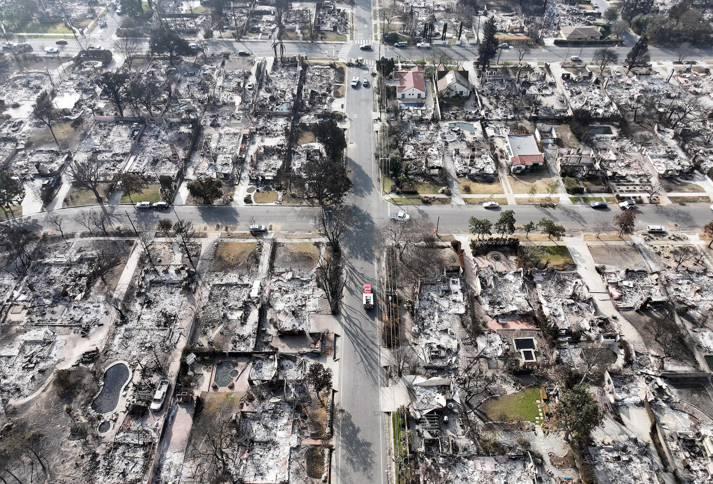
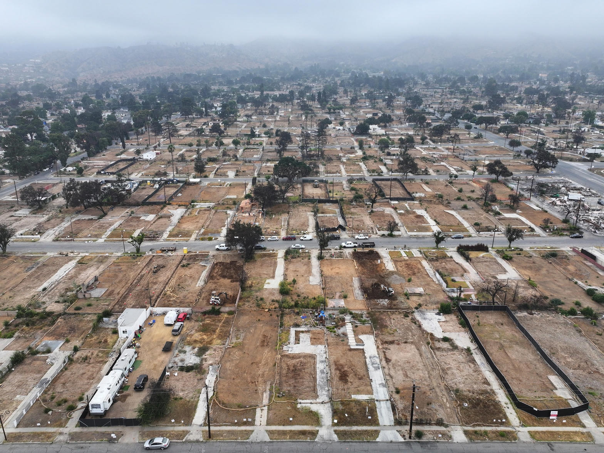
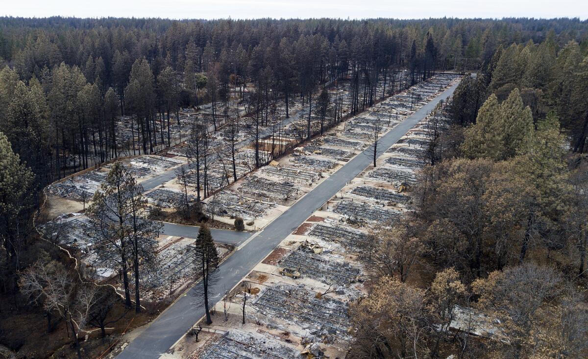
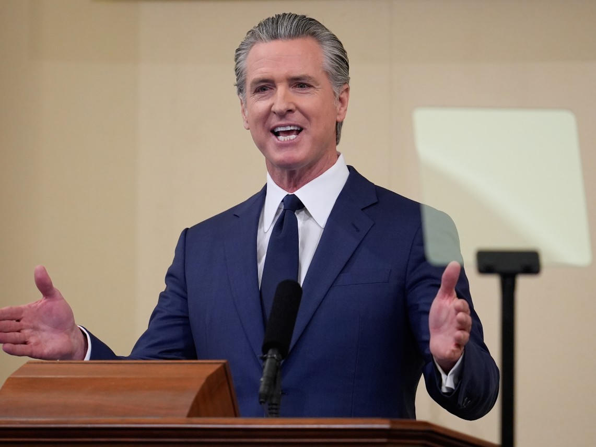

Eaton Fire
19 dead
More than 9,400 buildings destroyed in January 2025. Fifth deadliest, second most destructive fire in California history.
Civic record
A hillside video called California utilities a mafia. The deaths, the donations, and the wildfire fund are real. The word bribe is not how the law writes it. The bill still lands on the same meter.

Eaton Fire
19 dead
More than 9,400 buildings destroyed in January 2025. Fifth deadliest, second most destructive fire in California history.
Paradise
85 dead
Camp Fire, 2018. PG&E equipment. Fire Victim Trust still closing about 29 percent short of approved awards.
The fund
$21B + $18B
AB 1054 created the original wildfire fund. SB 254 added an $18 billion continuation account in 2025.
The clip is a one-take hillside monologue, about 109 seconds. The speaker walks a black dog on a dirt track under a gray sky. He wears a black cap that reads HEIDIWOOD and a white parody shirt that flips N.W.A. into a roster of California names: Bass, Newsom, Quiñones, Crowley, Horvath. The camera never leaves his face for long. That is the point. This is not a hearing. It is an accusation delivered at walking speed.
Public copies of the same script circulate under Spencer Pratt accounts. The argument does not depend on the celebrity wrapper. It depends on whether the sentences survive contact with filings, fire reports, and campaign money.
They mostly do, once you swap the street word for the legal one. Lobbying is not a briefcase of cash. Inverse condemnation and a prepaid wildfire fund are not a pardon. The pattern the video names is still sitting in Sacramento in plain sight.
Transcript extracted from the audio. Light punctuation added for reading. No meaning changed.
California's utility companies are like the mafia.
SoCal Edison spent millions of dollars on bribing politicians last year alone. Now Edison is getting a massive bailout from the state's wildfire fund to cover its liability for killing 19 people and destroying thousands of homes in the Eaton Fire. This is the racket.
California politicians like Gavin Newsom are bought and paid for by major utility companies. Just like when PG&E killed 85 people in Paradise in 2018, they simply called up the new governor, Gavin Newsom, and for $208,000 to his campaign, they got bailed out. These people in Paradise still haven't been paid out their full settlement.
The big utility companies have given Newsom millions of dollars over his political career, but they've saved billions in dodging wildfire settlements because Gavin gave them the ability to force their own ratepayers to pay for their own destruction.
So you ask yourself this. If these giant utilities are so successful at buying off Gavin Newsom in California, what will they do on the national stage as Gavin Newsom runs for president? If the same companies that paid to get out of liability for burning down our state are now funding Newsom's presidential run, what will Newsom owe them when he becomes president?
Newsom sold his soul for big business. You think he'd hesitate for a second to sell out your safety? Ask anyone in Altadena who just lost everything. Ask anyone from Paradise who, seven years later, still haven't been made whole. They know full well what Gavin Newsom will do.
The video uses courtroom language for a lobbying system. Below is the public record as of late September 2026. Supported means the core fact holds. Compressed means the number or the verb is hotter than the filing.
| Claim in the video | Record | Verdict |
|---|---|---|
| Utilities operate like a mafia | Opinion. What is documented is monopoly service territory, ratepayer-funded wildfire risk, and record lobbying. | Rhetoric |
| Edison spent millions bribing politicians last year | Bribery is a crime. Lobbying is disclosed. SCE reported about $3.32 million in state lobbying through six quarters of the 2025-26 session. Edison International reported $2.09 million in federal lobbying in 2024. Combined IOU state lobbying this session already hit $16.7 million, a record. | Compressed |
| Eaton Fire: 19 dead, thousands of homes, Edison liability, fund bailout | August 2026 LA County and Cal Fire report: arcing on an out-of-service SCE transmission tower dropped burning material into brush. 19 dead. More than 9,400 buildings gone. SB 254 and the existing $21 billion fund are the path for shifting large Eaton costs off the shareholder balance sheet. The Los Angeles Times called the 2025 language "effectively a bailout." | Supported |
| PG&E killed 85 people in Paradise in 2018 | Camp Fire death toll is 85. Official cause was PG&E's Caribou-Palermo line. PG&E did not dispute the origin finding. | Supported |
| $208,000 to Newsom, then a bailout | ABC10 campaign records: $208,400 from PG&E to Newsom's 2018 campaign and a supporting PAC, after PG&E's 2016 federal felony convictions. In 2019 Newsom signed AB 1054, the $21 billion wildfire fund. No public tape of a phone call that purchased the statute. The sequence is not invented. | Compressed |
| Paradise still not paid in full | Fire Victim Trust paid about $13.7 to $14 billion against roughly $19.6 billion in approved awards. Final 2026 distributions leave survivors near 70 to 71 percent. About 29 percent remains unpaid. AB 2700, meant to study how to close that gap, sat on the governor's desk in September 2026. | Supported |
| Utilities gave Newsom millions over his career | Consumer Watchdog, August 2026: about $962,500 from the three large IOUs to Newsom campaigns and causes, including Prop. 1 and recall defense. Direct candidate committees are closer to $162,000. "Millions to Newsom" overstates the personal campaign line. Millions into the surrounding machine is accurate if you count parties, measures, and the Governor's Cup. | Compressed |
| Ratepayers pay for the companies' destruction | AB 1054 split the original fund between shareholders and a monthly bill surcharge. SB 254 extends that surcharge and adds an $18 billion continuation account. If the fund is exhausted, later statutes contemplate securitized bonds that customers service. | Supported |
| Utilities will fund a Newsom presidential run, then own him | Newsom is widely treated as a 2028 candidate. There is not yet a presidential committee stuffed with Edison or PG&E checks in the public file. The question is a forecast, not a receipt. | Unproven |

California uses inverse condemnation. If utility equipment starts a fire, the company can owe the damage even without a jury finding of negligence. That rule is why Paradise bankrupted PG&E and why Eaton threatened Edison's books.
AB 1054, signed in July 2019, answered that rule with a $21 billion Wildfire Fund. Shareholders put in half up front. Customers put in the other half through a surcharge that shows up as a few dollars on a monthly bill. A utility with a valid safety certification can draw on the fund after a covered fire. That is the legal machine the video calls a bailout.
SB 254, signed September 19, 2025, added an $18 billion continuation account after the Eaton Fire made the original fund look small. The Los Angeles Times reported that fine print could let Edison start charging customers for Eaton costs above the fund, and that the three large IOUs had been lobbying Newsom and legislative leaders to replenish it. Consumer groups who had liked an earlier draft of the bill called the final language a last-minute rewrite.
In August 2026, fire investigators published the sentence the lawsuits had been waiting for. Two arcing events on an out-of-service SCE tower. Burning material into dry brush. Twelve seconds to a running fire. Nineteen people dead. The company had already stood up a voluntary compensation program and had already said its equipment was likely associated with ignition. Association is not the same as writing the full check.

The video's sharpest number is old and still good. ABC10 added the 2018 cycle and got $208,400 from a convicted federal felon to the man about to become governor. $58,400 went to the campaign. $150,000 went to Citizens Supporting Gavin Newsom for Governor 2018. Newsom called questions about the money a "strange question." He signed the fund the next year.
Consumer Watchdog's 2026 ledger is larger than one race. PG&E, Edison, and Sempra spent more than $127.6 million influencing California government during the Newsom years: $66.8 million in campaign and committee money, $60.8 million in lobbying. About $962,500 of that universe touched Newsom committees, recall defense, Proposition 1, the Governor's Cup, and related causes. That is not a smoking envelope. It is a weather system.
Paradise is the control sample. The Fire Victim Trust was seeded with $13.5 billion from the PG&E bankruptcy plan. Approved awards ran near $19.6 billion. After stock sales and third-party recoveries the trust paid more than the original seed and still finished around 70 percent. Mayor Steve Crowder said in 2026 that some residents were still in RVs. AB 2700 asked the CPUC to map the shortfall. PG&E and Edison opposed the bill and warned they would sue if it became law.

The last third of the monologue leaves California. If the same companies can buy relief in Sacramento, what happens when the same man runs for president? That is a campaign question, not a wildfire finding. No 2028 presidential committee has to disclose Edison or PG&E checks that do not yet exist. The honest version is narrower. The companies already know the governor's office. They already paid to be in the room when liability rules get rewritten. A national race would not invent that relationship. It would scale it.
"Sold his soul" is a sermon line. "Ask Altadena" and "ask Paradise" are better instructions. One town is 20 months past ignition. The other is almost eight years past it. Both are still arguing with a utility, a trust, and a statute about who pays for a fire that started on a wire.
The video is not a brief. It is a street summary of a ratepayer story that Sacramento keeps writing in 200-page bills. Swap "bribe" for "lobby." Swap "called the governor" for "wrote the check and waited for the session." Leave the dead, the houses, the 70 percent payout, and the surcharge on the bill. That part does not need a hillside. It is already in the record.